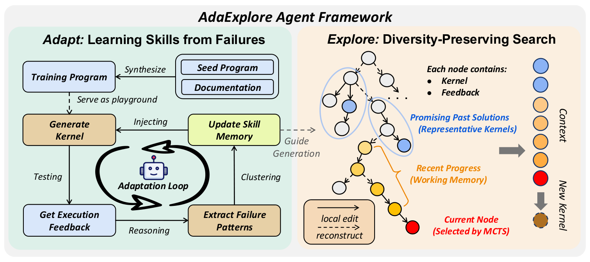
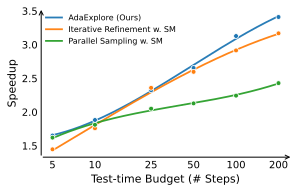

AdaExplore: Failure-Driven Adaptation and Diversity-Preserving Search for Efficient Kernel Generation
Paper: arXiv 2604.16625 (v1, Apr 17 2026), by Weihua Du, Jingming Zhuo, Yixin Dong, Andre Wang He, Weiwei Sun, Zeyu Zheng, Manupa Karunaratne, Ivan Fox, Tim Dettmers, Tianqi Chen, Yiming Yang, Sean Welleck — Carnegie Mellon University, University of Washington, Arm Ltd. Code MIT-licensed at github.com/StigLidu/AdaExplore. Grounded in the full arXiv HTML text including all appendices, plus the repository readme.
TL;DR
- Two decoupled mechanisms for two pathologies. Adapt runs the agent over 200 synthesized PyTorch programs, turns every compile/runtime failure into a one-line constraint rule ("you cannot generate a Triton pointer type inside a vectorized load"), deduplicates 1,178 raw observations to 174, and keeps the 78 recurring at least three times as a permanent system-prompt memory. Explore then searches each target task as an MCTS tree alternating small steps (patch edits, 60–88% code similarity) and large steps (structural regeneration, ~20%).
- On KernelBench with GPT-5-mini: 3.12× Level-2 and 1.72× Level-3 mean speedup in 100 steps, rising to 3.41×/1.78× at 200 steps with no sign of saturation, versus 2.12× for parallel sampling with the same memory. Correctness saturates at 100% on both levels.
- The two halves are separable and unequal. The memory alone lifts GPT-5-mini's single-pass L2 accuracy 22% → 54% and transfers to three other model families, a different benchmark (TritonBench-T, +28%), and three other GPUs spanning Ada, Ampere and Blackwell. The tree is worth much less: ablating MCTS costs 2.65× → 2.48×, and at 50 steps on L2 the strongest baseline — plain iterative refinement plus the memory — reaches 2.59×, within 0.06× of the full method.
Why this matters
Be precise about what this system evolves, because its two halves fall on opposite sides of the harness/artifact line. Explore evolves the artifact: Triton kernel source for one target task, discarded when the task ends — AlphaEvolve-style program search with an MCTS controller, sharing the machinery of harness evolution without being it. Adapt evolves harness state: a persistent, task-independent block of 78 validity rules injected into the agent's system prompt on every subsequent task. No control flow is rewritten and no scaffold code is edited, so this is not harness optimization in the Darwin Gödel Machine sense — but a learned system-prompt memory is a genuine harness component, and it is the half that generalizes.
The reason to spend a harness-optimization session on it is that the authors measure those two axes separately instead of reporting their sum. The memory ships as a portable text file and is run through the baselines — parallel sampling, iterative refinement, OpenEvolve, each with the memory — turning Table 1 into an ablation of cross-task harness state against within-task artifact search, and the answer is uncomfortable for the search half. What makes the measurement possible is the domain: kernel generation supplies a cheap, dense, non-gameable, per-instance oracle (element-wise correctness against a reference PyTorch program, wall-clock runtime on pinned hardware) where harness evolution normally runs on sparse, gameable unit-test signal over a few dozen tasks. The program-level lesson: the smaller and more portable the evolved harness object, the more of its value you can actually verify.
The core idea
Two challenges, C1 and C2. C1, feasible exploration: Triton is underrepresented in pretraining data, the feasibility boundary is sharp, and most generated kernels do not compile — GPT-5-mini gets 22% of KernelBench L2 correct in one pass. C2, optimization efficiency: among valid kernels the landscape is non-linear and combinatorial, and real gains need coordinated structural changes (tiling, memory layout, parallelization scheme) rather than local edits, so refinement chains stall in local optima.
The decomposition follows: learn reusable constraints to stay inside the feasible set (cross-task, offline, one-time), and maintain diverse candidates to traverse the rugged landscape (per-task, online). No fine-tuning, no external knowledge — the constraints come from the model's own failures, which is why they transfer across model families instead of encoding one model's quirks.

Figure 2 from the paper: Adapt (left) synthesizes training programs, executes generated kernels, clusters failure patterns, and injects the resulting skill memory back into generation. Explore (right) selects a node by MCTS and builds context from representative kernels plus the working memory of the current branch.How it works
Adapt. Task synthesis is Evol-Instruct-style mutation: sample three KernelBench Level-1 seed programs (disjoint from the L2/L3 test sets) plus operators from the PyTorch nn docs, prompt GPT-5 to recombine them, execute, discard anything that errors. Mutation-based synthesis beat simpler alternatives because it pushes the agent into low-level edge cases where it makes more errors — the failures are the product.
The agent then attempts 25 kernels per synthesized task, and every failure is summarized into one constraint rule, matched semantically against the growing memory (frequency incremented) or added fresh. The memory is exposed to subsequent tasks online, so later tasks avoid earlier pitfalls. The filter is a frequency threshold \(O\):
where \(\widetilde{\mathcal{M}}\) is the raw memory and \(O=3\). Frequency proxies generality: high-frequency rules capture recurring failure modes, low-frequency ones are noise. From 200 tasks: 1,178 raw → 174 deduplicated → 78 retained, dominated by Triton syntax/DSL constraints, then Python-environment issues, then memory/indexing errors. The compression ratio is the finding — failures in low-resource kernel generation concentrate around a small, stable rule set.
Explore. Each target task gets a search tree \(\mathcal{T}\) whose nodes are kernel candidates. Node selection uses two UCT-style scores, one for descending into an existing child and one for creating a new one:
with \(Q(s,a)\) the observed value of child \(a\), \(N(\cdot)\) visit counts, \(|\mathcal{C}(s)|\) the current number of children, and \(Q_{\mathrm{expand}}(s)=\max_{a}Q(s,a)\). The explicit expand option exists because the action set is not enumerable in advance; the \(|\mathcal{C}(s)|^{2}\) denominator makes each additional sibling progressively more expensive, keeping the tree from fanning out flat.
The context construction is the part worth stealing. Each generation conditions on a working memory \(W_s\) of the most recent \(C_{\text{recent}}\) states along the root-to-\(s\) path and a pool \(\mathcal{K}_{\text{pool}}\) of representative kernels from earlier search:
To avoid near-duplicates, the path is partitioned into connected segments of consecutive small steps, each contributing at most one representative. The two actions then delete opposite halves of the context: a large step clears \(W_s\) so the agent breaks away from the current chain, a small step clears \(\mathcal{K}_{\text{pool}}\) so the edit stays grounded in it. Small steps are old_str/new_str patches preceded by self-generated review guidance — which the authors found can hurt correctness, so guidance is disabled whenever every kernel in working memory is broken and re-enabled once one is correct.
Hyperparameters (Table 11): 200 tasks × 25 candidates, \(O=3\), \(C_{\text{recent}}=C_{\text{pool}}=5\), \(c_{\mathrm{explore}}=0.3\), \(c_{\mathrm{expand}}=0.3\) on L2 and 0.15 on L3 (harder tasks want budget concentrated on the current branch), \(p_{\text{large}}=0.2\), temperature 1.0.
# AdaExplore = Adapt (once, offline) + Explore (per target task)
# Condensed from Algorithms 1 and 2; hyperparameters from Table 11.
ADAPT(D_syn = 200 synthesized PyTorch programs, agent pi, threshold O = 3):
M_raw = {}
for x in D_syn: # 25 candidates per task
Y = sample kernels ~ pi(. | x, M_raw) # memory grows online
F = execute(Y) against the reference impl of x
for (y_i, f_i) in zip(Y, F):
if y_i failed to compile or run:
m = summarize(y_i, f_i) into one constraint rule
if m semantically matches m' in M_raw: freq(m') += 1
else: M_raw[m] = 1
return M = { m in M_raw : freq(m) >= O } # 1178 -> 174 -> 78 rules
EXPLORE(target task x, memory M, budget T, C_recent=5, C_pool=5, p_large=0.2):
tree = { virtual root }
for t in 1..T:
s = select node via UCT(s,a) vs Expand(s) # c_explore = 0.3
W_s = last C_recent states on the root->s path # working memory
K_pool = <=1 kernel per run of consecutive small steps, sample C_pool
a = LargeStep if s is root else (LargeStep w.p. p_large else SmallStep)
if a == LargeStep: clear W_s # drop the branch, keep the pool
else: clear K_pool # keep the branch, drop the pool
y' ~ pi(. | x, M, W_s, K_pool, a) # temperature 1.0
feedback = execute(y') # correctness + timed runtime
attach child s' = (y', feedback, score) under s; backprop visits to root
return the highest-performing correct kernel in the tree
Results
Main table (KernelBench L2/L3, GPT-5-mini, A6000 pinned at 1500 MHz, fp32, speedups clipped at 10× to suppress outlier domination). Single-pass on L2: GPT-5-mini 22% correct / 0.34×; GPT-5 51% / 0.78×; Claude-4.6-Opus 60% / 0.76×; the Triton-specialized AutoTriton 41% / 0.44×; the RL baseline DR. Kernel 46% / 0.86×. Every frontier model is slower than PyTorch eager in one pass.
Multi-pass at 50 steps on L2: parallel sampling 1.69× → 2.12× with the skill memory; iterative refinement 1.96× → 2.59× with the memory; OpenEvolve with memory 1.91×; DR. Kernel at a matched 4×14 budget 1.78×; AdaExplore 2.65× (71% Fast@1.2, 34% Fast@2). At 100 steps: 3.12× (78%/44%). At 200: 3.41× (81%/49%).
L3 is where the tree earns its keep: AdaExplore 1.55× at 50 steps and 1.72× at 100, against OpenEvolve+memory 1.47×, IR 1.31×, and — critically — IR+memory 1.16×, worse than IR without memory. The paper attributes this to L3 being model-level structures (ResNet, LSTM) where gains need higher-level design changes, with the memory biasing refinement toward conservative local updates. The skill memory is not a free lunch.

Figure 3 (left) from the paper: AdaExplore and iterative-refinement-with-memory are indistinguishable through ~25 steps; parallel sampling flattens early; the AdaExplore/IR gap opens only past 50 steps and neither has saturated at 200.Memory transferability (Table 2). Each base model distils its own memory. L2 Pass@1: GPT-5-mini 22% → 54%, Qwen3-Coder-Next 7% → 17%, GPT-5 51% → 67%, Claude-4.6-Opus 60% → 72%. On TritonBench-T (166 tasks) the KernelBench-derived memory lifts GPT-5-mini single-pass accuracy 54% → 82%, and 10-step AdaExplore reaches 97% / 24% Fast@1.2. Across GPUs, the A6000-collected memory yields 2.13× on L40S, 3.07× on A100, 2.98× on GB200.
Ablations at 50 steps on L2 (full: 100% / 2.65× / 71% Fast@1.2): w/o skill memory 2.32×, w/o representative-kernel pool 2.30×, w/o MCTS (chain search) 2.48×, w/o small step 2.35× with correctness slipping to 99%, w/o large step 2.62×. As contributions: memory +0.33×, representative pool +0.35×, tree +0.17×, small steps +0.30×, large steps +0.03×. The representative-kernel pool — a context-engineering detail — matters more than the tree structure it supports.
FlashInfer-Bench case study (3 production kernels, 50 steps, B200). Fused add-RMSNorm: 7.22× over PyTorch and 1.75× over the expert FlashInfer CUDA kernel, from a single-tile BLOCK=2048 register-resident reduction. GEMM: 0.42× of cuBLAS. GQA paged decode: 18.17× over PyTorch but 0.15× of FlashInfer, whose warp-specialized XQA (online softmax, TMA, FP8, Blackwell QMMA) the generated two-pass-softmax kernels never approach. Correctness rates are brutal — 32%, 46%, 22% of 50 attempts.
How it connects
- Darwin Gödel Machine — the hub of this thread, and the boundary marker. DGM rewrites its own agent code and archives the variants; AdaExplore rewrites nothing about itself and only accumulates text the agent reads. Adapt is the minimum viable version of DGM's premise: the smallest self-modified harness object there is, learned from execution failures rather than proposed by an LLM editor.
- Rethinking Harness Evolution — the standing skeptic, partially satisfied. AdaExplore does run the budget-matched parallel-sampling and sequential-refinement controls the critique demands, at identical step counts, memory shared into both arms; it clears that bar on speedup while reporting no tokens, seeds, or variance. On the generalization axis it beats the field: where evolved harnesses gained +0.6 held-out, this harness object transfers to four model families, three unseen GPUs, and a second benchmark.
- No Universally Best Harness — the Berkeley result predicts this table. OpenEvolve is 1.91× on L2 but second-best at 1.47× on L3, while IR+memory is near-best on L2 and worst on L3: ranking flips with problem class, and hand-tuning \(c_{\mathrm{expand}}\) per level is the same admission in hyperparameter form.
- Meta-Harness, Harness Handbook, DarwinX — the spectrum of harness objects: ~10 MTok of raw traces per iteration to rewrite scaffold code; behavior localization inside a large harness repo; whole lineages under a preserve-and-extend contract. AdaExplore is the austere end, 78 one-line rules, buying transferability with that austerity.
- Recursive Harness Self-Improvement, Living-Harness, EvoHarness-RL — the "harness state, not harness code" axis: a prompt-level spec of the agent loop, gated commits into episodic memory and a state graph, a trained policy for when touching that state earns its turn. AdaExplore's memory is the offline write-once version, and its Level-3 regression is the warning all three should read.
- AdaEvolve, ASI-Evolve, Darwinian Evolver, CORAL, SAGA — sibling artifact-evolution systems on the same machinery; AdaEvolve is the direct foil on scheduling, since the fixed \(p_{\text{large}}=0.2\) and per-level \(c_{\mathrm{expand}}\) here are exactly the static controller it exists to eliminate. AIDE² supplies the reward-hacking context (KernelBench hacking at 63%) that AdaExplore's protocol defends against:
torch.allcloseat 5e-2 absolute and relative, all trials must pass, per-trial seeds, remote judge isolation. SPADE and Frontis-MA1 synthesize tasks to train weights; Adapt synthesizes 200 to harvest text. Background: AlphaEvolve, ShinkaEvolve.
Critical take
- Most of the L2 headline is the memory, not the search. At 50 steps IR+memory is 2.59× against AdaExplore's 2.65× — a 2.3% relative gap, single-run, no error bars, at temperature 1.0. The persistent harness state does the work; the tree only clearly pays off on L3 (1.55× vs IR's 1.31×) and past 50 steps. Anyone quoting "3.12×" should also quote the memory-augmented refinement baseline at the same budget (roughly 2.9× at 100 steps, read off Figure 3).
- Distilled harness state is not monotone. On Level 3, iterative refinement with the memory reaches 1.16× against 1.31× without it — the rules file makes the strongest simple baseline actively worse. The paper's explanation (model-level structures need higher-level redesign, and validity rules bias the agent toward conservative local edits) is plausible and untested. A memory distilled from operator-level failures encodes a scope as well as a skill, and nothing in the pipeline detects when a task falls outside it.
- Cheap per use, not per acquisition — and never reported with variance. Adapt spends 5,000 generate-and-execute rollouts plus judge clustering over 1,178 experiences to produce 78 lines of text, a cost that appears in no reported budget: amortized over a 100-task L2 benchmark it is a second 50-step run per task. Reuse across four model families, three GPUs and a second benchmark redeems the economics, but the accounting should be stated. Every Table 1 number is a single run, and steps are not cost-neutral units — large steps emit whole kernels, small steps patches. Reproducibility is otherwise a real strength: MIT license, released memory file and synthesized dataset, pinned hardware and clock, and a readme admitting a 50-step L2 run costs "on the order of \(10^4\)" API requests.
- Small blemishes. Section 4.3 says single-pass GPT-5-mini "reaches only 25%" and GPT-5 "47%", while Table 1 lists 22% and 51%. The FlashInfer-Bench evaluation is three hand-picked kernels, two of which lose badly to the expert baseline; it is a case study, not benchmark evidence. And "continues to improve with additional computation" is demonstrated to 200 steps — where the money runs out, not where the curve bends.
If you remember three things
- Failure memory is the cheap, portable half. 1,178 execution failures compress to 78 one-line validity rules that lift single-pass L2 correctness 22% → 54%, transfer across four model families, three other GPUs, and a second benchmark (+28% on TritonBench-T), and ship as a text file. Take that component — but note it hurts iterative refinement on Level-3 (1.31× → 1.16×).
- The tree is the expensive, contingent half. Ablations put MCTS at +0.17× while the representative-kernel pool feeding its context is worth +0.35×. Structured search pays on model-level L3 tasks and past 50 steps, and near-nothing on L2 at 50 steps where refinement-plus-memory is within 0.06×.
- The smallest harness object had the best generalization. Nothing here rewrites the agent's code or replans its loop: the entire learned harness is 78 lines of natural-language constraints, and that is the piece that survives a change of model, GPU and benchmark. Against the harness-evolution literature's held-out record, the austerity of the evolved object looks less like a limitation than the reason it transferred.